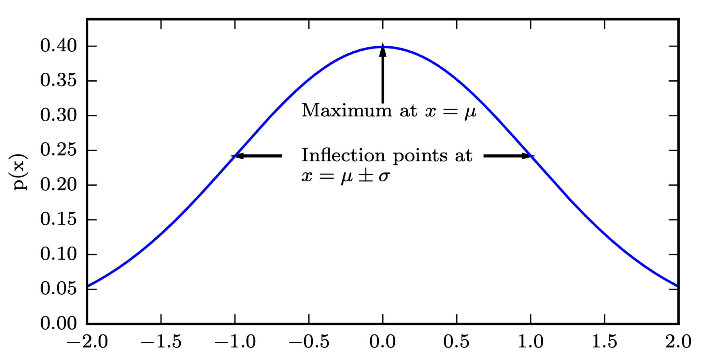
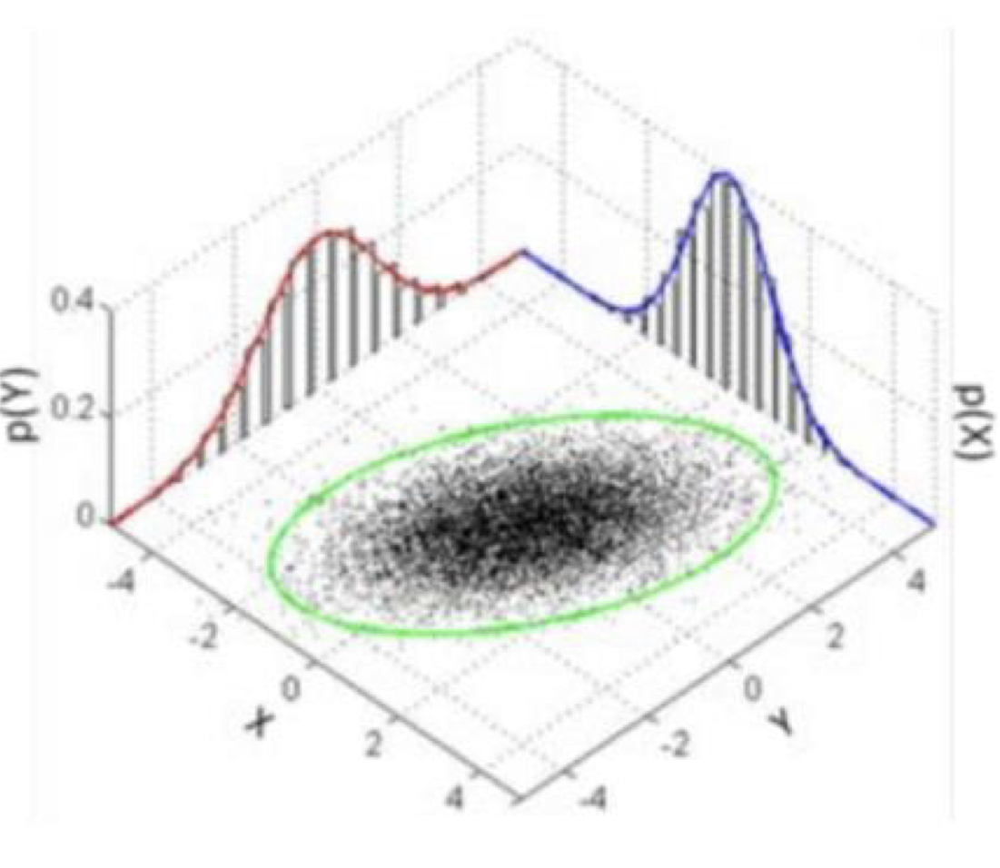
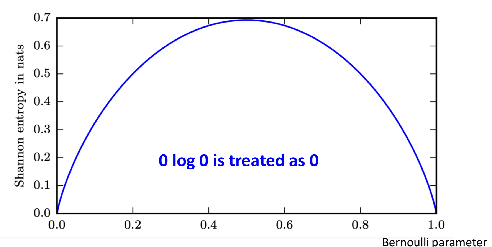
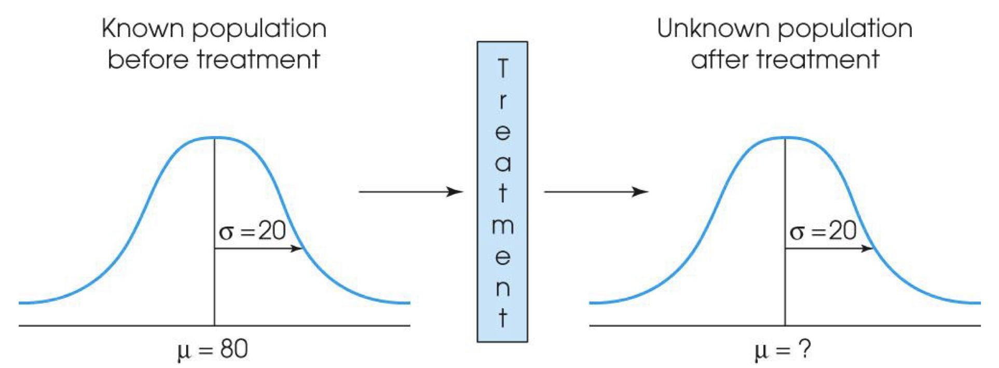
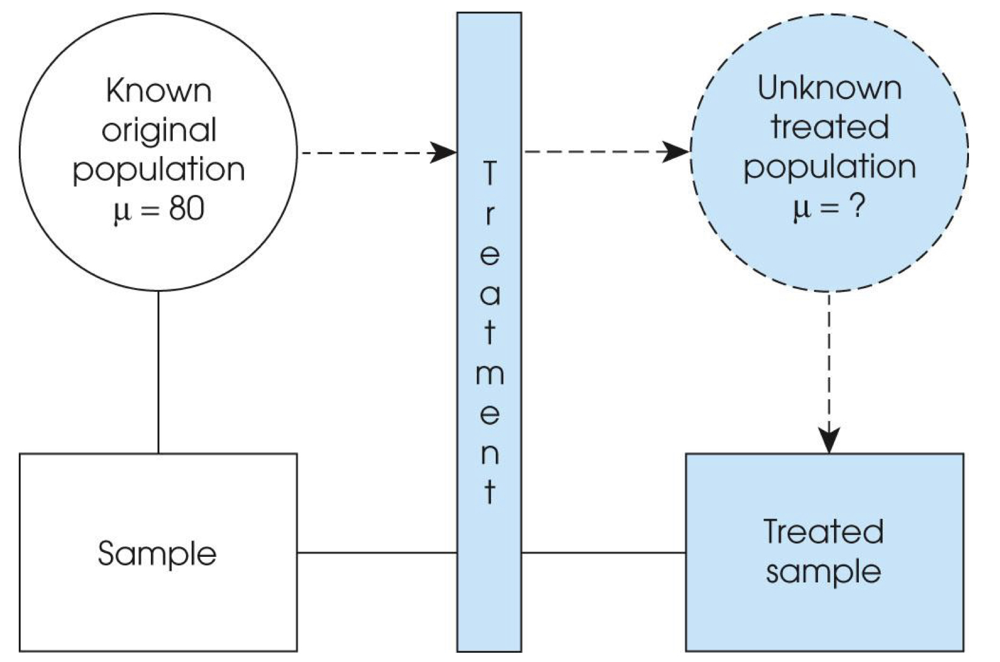
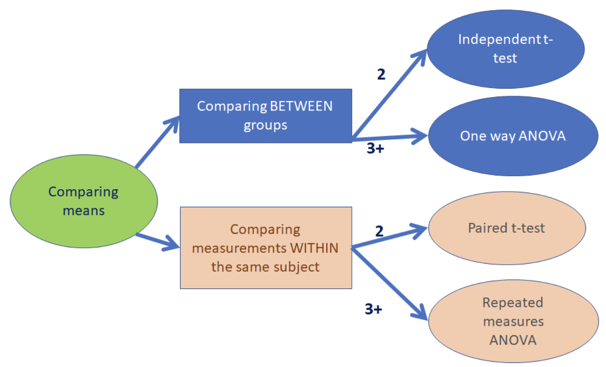
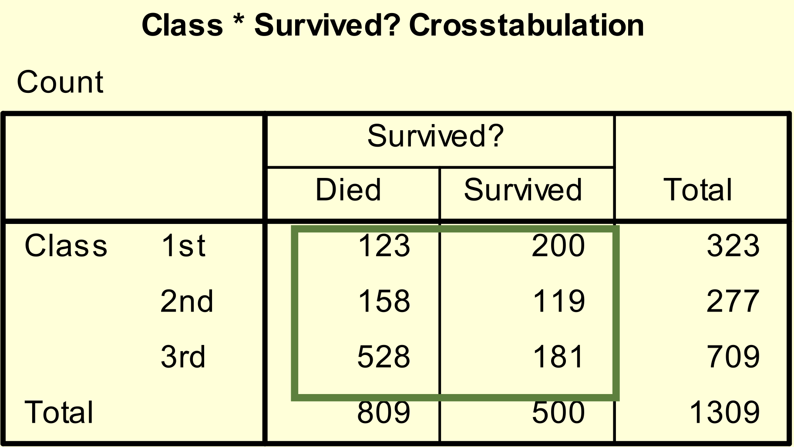
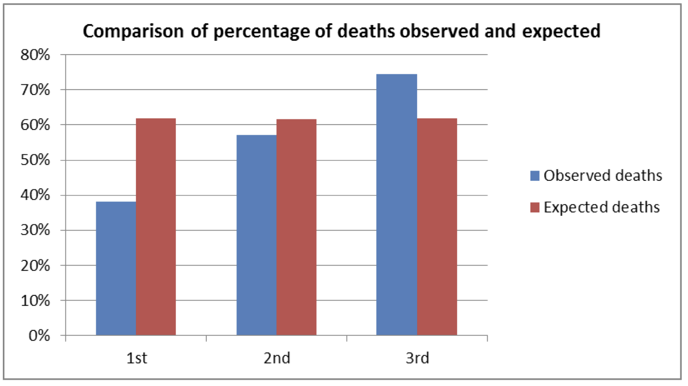
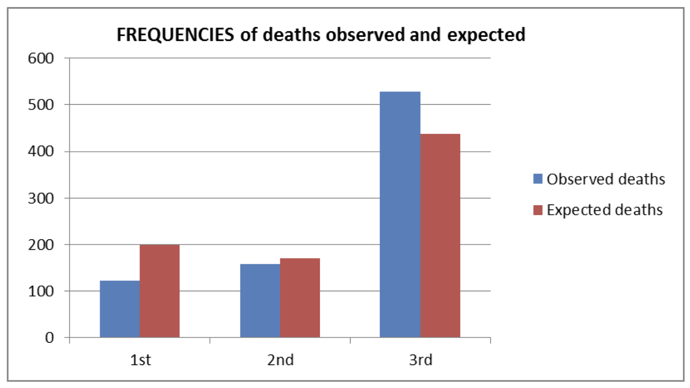
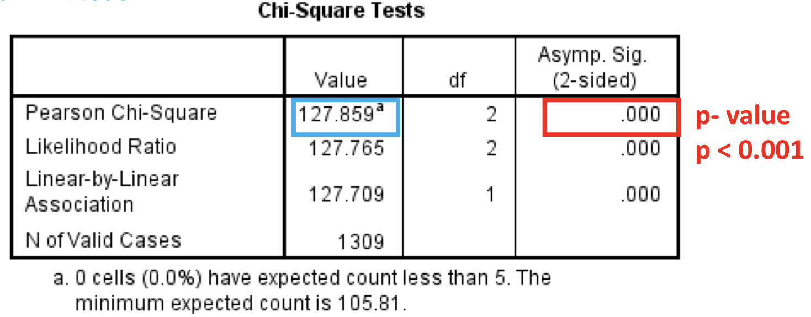

Big Data - Statistics
Data Collection
Why Statistics
In general, analysis process is…

Terminologies
Population vs. Sample
- Population: A statistical population is the set of measurements or record of some qualitative trait corresponding to the entire collection of units for which inferences are to be made
- Sample: A sample from statistical population is the set of measurements that are actually collected in the course of an investigation

Descriptive vs. Inferential
- Descriptive Statistics: Consists of methods for organizing and summarizing information (Weiss, 1999)
- Inferential Statistics: Consists of methods for drawing and measuring the reliability of conclusions about population based on information obtained from a sample of the population (Weiss, 1999)
Note ❗️
Descriptive and inferential statistics are interrelated
Assume that you just started data analysis. What should you do?
- Preliminary descriptive analysis
- (Choice of appropriate inferential method)
- Inferential analysis
Parameters vs. Statistics
- Parameters: An unknown numerical summary of the population (Agresti & Finalay, 1997)
- Statistics: A known numerical summary of the sample which can be used to make inference about parameters (Agresti & Finalay, 1997)
- Example
- The proportion p of 18-30 year-olds who use Twitter at least once a day -> Parameter
- The proportion p’ of 18-30 year-olds using Twitter at least once a day, calculated from a sample of 18-30 year-olds
Discrete vs. Continuous
- Discrete Variables: indicates a finite numbers of values or as many values as there are integers. E.g. tweet counts per day
- Continuous Variables: indicates any real values. E.g. time difference between two consecutive tweet postings
Central Tendency
Mean
- The sum of observed values in a data divided by the number of observations
- p.s. Often affected by extreme values in the data (i.e., outliers)
>>> import numpy
>>> numpy.mean(numpy.array([1,2,3,1,3,3,54,6]))
9.125
Median
- The value of the variable in a data set that divides the set of the observed values in half, so that the observed values in one half are less than or equal to the median value and the observed values in the other half are greater or equal to the median value
- To compute median, the observed values of variable in a data should be sorted
- If the # observation is odd, then the sample median is the observed values exactly in the middle of the ordered list
- If the # observation is even, then the sample median is the number halfway between two middle observed values in the ordered list
>>> import numpy
>>> numpy.mean(numpy.array([1,2,3,1,3,3,54,6]))
3
Mode
- A discrete variable (or its value) is that value of the variable which occurs with the greatest frequency in a data set
- p.s. if the greatest frequency is 1 (i.e., no value occurs more than once), then the variable has no mode
>>> from statistics import mode
>>> mode([1,1,2,3,3,3,3,3,4])
4
Range
- The difference between its maximum and minimum values in a data set
- Formally, range = max - min
- p.s. range is affected by only max and min values, which means that other values may be ignored
- e.g. X = [1,10,10,11,11,10,11,10,11,10,11,11,10,11,100]
- Can we say that range of X is [1,100]?
Percentile & Quartiles
- A method dividing a given data set with the equal portions
- Quartile (4 parts)
- Let n denote the number of observations in a data set. Arrange the observed values of variable in a data in
increasing order
- The 1st quartile Q1 is at position (n+1)/4
- The 2nd quartile Q2 (the median) is at position (n+1)/2
- The 3rd quartile Q3 is at position 3(n+1)/4
- Interquartile range: the difference between 1st and 3rd quartiles of variables (i.e. IQR = Q3 -
Q1)
- Roughly, the IQR gives the range of middle 50% of the observed values
Interquartile Range
- The sample of interquartile range represents the length of the interval covered by the center half of the observed values of the variable
- This measure of variation is not disturbed if a small fraction the observed values are very large or very small
- Five-number summary: consists of min, max, and quartiles wirtten in increasing order
- Min, Q1, Q2, Q3, Max
Standard Deviation
- A measure of a distribution’s deviation from its mean (square root of variance)
- For a variable x, the sample standard deviation is
- Preferred when the mean is used as the measure of center (e.g. symmetric distribution)
- Trivially, more variation -> larger standard deviation
- However, it can be strongly affected by a few extreme observations
>>> import numpy
>>> numpy.std([0.1,2.8,3.7,2.6,5,3.4])
1.4851
Probability
Probability Mass Function (PMF)
- For discrete random variables
- The domain of P must be the set of all possible states of x
- 0 <= P(x) <= 1
- An impossible event has probability 0 and no state can be less probable than that. Likewise, an event that is guaranteed to happen has probability 1, and no state can have a greater chance of occurring.
- P(x) = 1
- We refer to this property as being normalized. Without this property, we could obtain probabilities greater than one by computing the probability of one of many events occurring.
- Uniform distribution among k states:
- For continuous random variables
- The domain of P must be set of all possible states of x
- p(x) >= 0
- Note that we do not require p(x) <= 1
- Uniform distribution u(x;a,b) = 1/(b - a)

Rules associated with Probability
- Computing marginal probability with the Sum Rule
- Conditional Probability
| &space;=&space;\frac{P(\textrm{y}&space;=&space;y,&space;\textrm{x}&space;=&space;x)}{P(\textrm{x}&space;=&space;x)}) |
- Bayes’ Rule
| &space;=&space;\frac{P(x)P(y | x)}{P(y)}) |
- Chain Rule of Probability
| E.g. &space;=&space;P(a | b,c)P(b | c)P(c)) |
Independence
Notation: x ⊥ y
- Conditional Independence
| &space;=&space;p(\textrm{x}&space;=&space;x&space; | &space;\textrm{z}&space;=&space;z)&space;p(\textrm{y}&space;=&space;y&space; | &space;\textrm{z}&space;=&space;z)) |
-
Equivalently, p(x y,z) = p(x z) -
Notation: x ⊥ y z
Expectation
- Discrete variable
- Continuous variable
- Linearity of Expectations
Note ❗️
This always holds, even when f(x) and g(x) are dependent
Covariance
Note ❗️
Covariance can be negative
Cov(x)i,j = Cov(xi,xj)
- Covariance Matrix
- Diagonal elements are variance of i-th element
Randomized Algorithms (=Probabilistic Algorithm)
| Las Vegas | Monte Carlo | |
|---|---|---|
| Type of Answer | Exact | Random amount of error |
| Runtime | Random (until answer found) | Chosen by user (longer runtime gives less error) |
Estimating sums / integrals with samples

Justification
- Unbiased:
- The expected value for finite n is equal to the correct value
- The value for any specific n samples will have random error, but the error for different sample sets cancel out
- Low variance:
- Variance is O(1/n)
- For very large n, the error converges “almost surely” to 0
Distribution & Information Theory
Bernoulli Distribution
- Expectation
- Variance
Gaussian Distribution
- Parameterized by variance:
- E[x] = μ, Var[x] = σ2
&space;=&space;\sqrt{\frac{1}{2\pi&space;\sigma^2}}exp(-\frac{1}{2\sigma^2}(x-\mu)^2)
- Parameterized by precision:
&space;=&space;\sqrt{\frac{\beta}{2\pi}}exp(-\frac{1}{2}\beta(x-\mu)^2)
Gaussian Distribution

Theorems related to Gaussian Distribution
- Central limit theorem: the sum of many independent random variables is approximately normally distributed
as
- Law of large numbers: the sample average converges to the expectation as the sample size goes to infinity
as
, where
Multivariate Gaussian
- Parameterized by covariance matrix
- μ is a vector
- ∑ is a covariance matrix

- Parameterized by precision matrix
Information Theory
- Information theory: quantifying how much information is present in a signal
- Learning that an unlikely event has occurred is more informative than learning that a likely event has occurred
- Self-Information of x
- I(x) = -logP(x)
- Intuition: minimum # of bits to express (encode) an event with probability P(x)
- Rare event has a large information content
Entropy
- Entropy: expectation of self-information
- Minimum expected # of bits to express a distribution
- For Bernoulli variable,
- H(x) = -p log p - (1 - p) log(1 - p)

KL Divergence
- Measure the difference of two distributions P(x) and Q(x)
- Properties
- Always non-negative: 0 if and only if P and Q are the same
- Intuition: If x ~ P, the best (minimal) encoding is given by assigning log P(x) bits for each x
- Not symmetric:
- Always non-negative: 0 if and only if P and Q are the same
Cross-Entropy
- Average # of bits needed to identify an event from the true distribution P, if we use a coding scheme optimized for unnatural distribution Q
-
H(P, Q) = H(P) + DKL(P Q) = -Ex~P log Q(x) - Minimizing the cross-entropy w.r.t. Q is equivalent to minimizing the KL divergence
Intermediate Summary
- “Remember” the key terminology / concepts that popularly used in Statistics
- Population, Sample, Descriptive, Inferential, Parameters, Statistics, …
- Mean, Median, Mode, Range/Quartile, Standard Dev.
- Probability, Expectation, Covariance
- Distributions
- Self-Information, Entropy, KL-Divergence, Cross-Entropy
Association between Distributions
Pearson Correlation Coefficient
- A measure of the strength of the linear relation between two variables x and y
- 1 is total positive correlation, 0 is no correlation, and -1 is total negative correlation
>>> from scipy import stats
>>> rvs1 = stats.norm.rvs(loc=5, scale=10, size=500)
>>> rvs6 = stats.norm.rvs(loc=5, scale=10, size=500)
>>> stats.pearsonr(rvs1, rvs6)
(-0.028991426987572115, 0.5177734067731351)
Spearman’s correlation
- Pearson’s correlation assumes “normality of the distributions” being compared
- The Spearman correlation is a non-parametic measure of the monotonicity of the relationship between two datasets
>>> from scipy import stats
>>> rvs1 = stats.norm.rvs(loc=5, scale=10, size=500)
>>> rvs6 = stats.norm.rvs(loc=5, scale=10, size=500)
>>> stats.spearmanr(rvs1, rvs6)
(-0.045163188652754614, 0.31351864108864802)
Kendall’s Tau
- A measure of the correspondence between two rankings
- Close to 1 if strong agreement, -1 indicates strong disagreement
>>> from scipy import stats
>>> rvs1 = stats.norm.rvs(loc=5, scale=10, size=500)
>>> rvs6 = stats.norm.rvs(loc=5, scale=10, size=500)
>>> stats.kendalltau(rvs1, rvs6)
(-0.0319198396793587, 0.28602201432226193)
- What if two sets have different elements?
- Or, what if two sets have different # elements?
Hypothesis Testing
- Hypothesis: A statement about some characteristic of a variable or a collection of variables. (Agresti & Finlay, 1997)
- The general goal of a hypothesis test is to provide a plausible explanation for the results from a research study.
- Hypothesis testing is a technique to help determine whether a specific treatment has an effect on the individuals in a population.
- The hypothesis test is used to evaluate the results from a research study in which,
- A sample is selected from the population
- The treatment is administered to the sample
- After treatment, the individuals in the sample are measured

- If the individuals in the sample are noticeably different from the individuals in the original population, we have evidence that the treatment has an effect
- However, it is also possible that the difference between the sample and the population is simply sampling error

- The purpose of the hypothesis test is to decide between two explanations:
- The difference between the sample and the population can be explained by sampling error (there does not appear to be a treatment effect)
- The difference between the sample and population is too large to be explained by sampling error (there does appear to be a treatment effect)
- All statistical tests have five elements: Assumptions, hypotheses, test statistics, p-value, and conclusion
Assumptions
- The statement that the statistic test relies on
- E.g., normal distribution, equal population variance
- Every test has assumptions, and cannot use if assumptions are violated
- There also exist some statistics tests to assure assumptions
- F-test for equal population variances
Hypothesis
- Consider two hypotheses about the value of a population parameter
- Null hypothesis (Ho): A hypothesis to directly test
- Treatment has no effect (no change, no difference)
- What we assume is true to begin with
- Typically that there is no difference/effect/relationship etc.
- Alternative hypothesis (HA): A hypothesis contradicts that null hypothesis
- What we aim to gather evidence of
- Typically that there is a difference/effect/relationship etc.
- Null hypothesis (Ho): A hypothesis to directly test
- Two-sided vs. One-sided
| H0 | H1 |
|---|---|
| μ = 50 cm/s | μ ≠ 50 cm/s |
| μ = 50 cm/s | μ < 50 cm/s |
Type of Errors
| Study reports NO difference (Do not reject H0) |
Study reports IS a difference (Reject H0) |
|
|---|---|---|
| H0 is true Difference does NOT exist in population |
✅ | ❌ Type I Error |
| HA is true Difference DOES exist in population |
❌ Type II Error |
✅ |
- ✅ Prob of this = Power of test
- ❌ Type I Error: Typically restrict to a 5% Risk = level of significance
- ❌ Type II Error: Controlled via sample size (= 1 - Power of test)
Test Statistics
- Measures how close the sample ahs come to null hypothesis
- The value itself might mean nothing, but usually meaningful for comparison
- Example: t-test
- Measure difference of means when comparing two distributions
What statistics to choose?
- Depends on data types and goals

CF) Parametric vs. Non-parametric
| Parametric test | What to check for normality | Non-parametric test |
|---|---|---|
| Independent t-test | Dependent variable by group | Mann-Whitney test |
| Paired t-test | Paired differences | Wilcoxon signed rank test |
| One-way ANOVA | Residuals/Dependent | Kruskal-Wallis test |
| Repeated measures ANOVA | Residuals | Friedman test |
| Pearson’s Correlation Co-efficient | At least one of the variables should be normal | Spearman’s Correlation Co-efficient |
| Linear Regression | Residuals | None - Transform the data |
- Notes: The residuals are the differences between the observed and expected values
p-value
- The probability when H is true, of a test statistic value at least as contradictory to H0 as the value actually observed. The smaller the p-value, the more strongly contradict H0 (Agresti & Finlay, 1997)
- p-value is often defined with respect to a chosen confidence level (95%, 99% … <–> 0.1, 0.05, 0.01, …)
- The t-test has important assumptions that must be satisfied in order for the associated p-value to be valid
- The samples are independent
- Each sample is from a normally distributed population
Steps to undertaking a hypothesis test
- Define study question
- Set null and alternative hypothesis
- Calculate a test statistic
- Calculate a p-value
- Make a decision and interpret your conclusions
Case Examples
Titanic
- The ship Titanic sank in 1912 with the loss of most of its passengers
- 809 of the 1,309 passengers and crew died = 61.8%
- Research question: Did class of travel affect survival?
Chi-squared Test
- Null: There is NO association between class and survival
- Alternative: There IS association between class and survival

What would be expected if the null is true?
- Same proportion of people would have died in each class
- Overall, 809 people died out of 1309 = 61.8%

Chi-squared Test Actually Compares Observed and Expected Frequencies (not ratio)

Expected number dying in each class = 0.618 x no. in class
Chi-squared test statistic
- The chi-squared test is used when we want to see if two categorical variables are related
- The test statistic for the Chi-squared test uses the sum of the squared difference between each pair of observed (O) and expected values (E)
Results
Test Statistic = 127.859

- Decision rule
- If P < 0.05 reject H0 => Evidence of HA being true (i.e. IS association)
- If P > 0.05 do not reject H0 (i.e. NO association)
Reference
- Mining of Massive Datasets by Jure Leskovec, Anand Rajaraman, Jeff Ullman
- Introduction to Big Data Lecture by Daejin Choi in Incheon National University